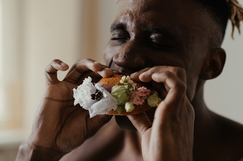
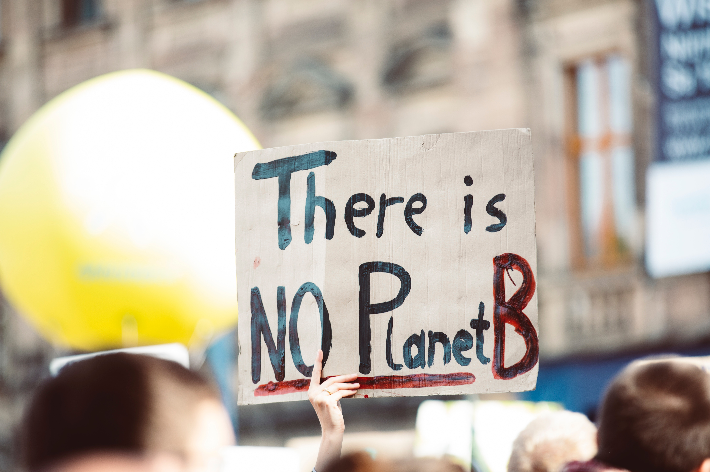

Ventajas de una alimentacion vegetariana
ser vegano es un estilo de vida en el que se involucran más cosas que la no ingesta de productos cárnicos.
Mas info

cual es el impacto social de ser vegetariano?
produccion y consumo responsable, igualdad de genero, hambre cero, accion por el clima
Mas info